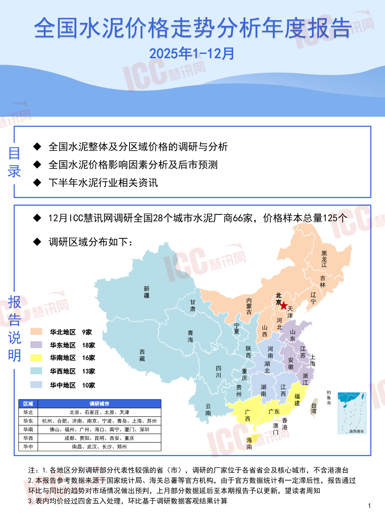
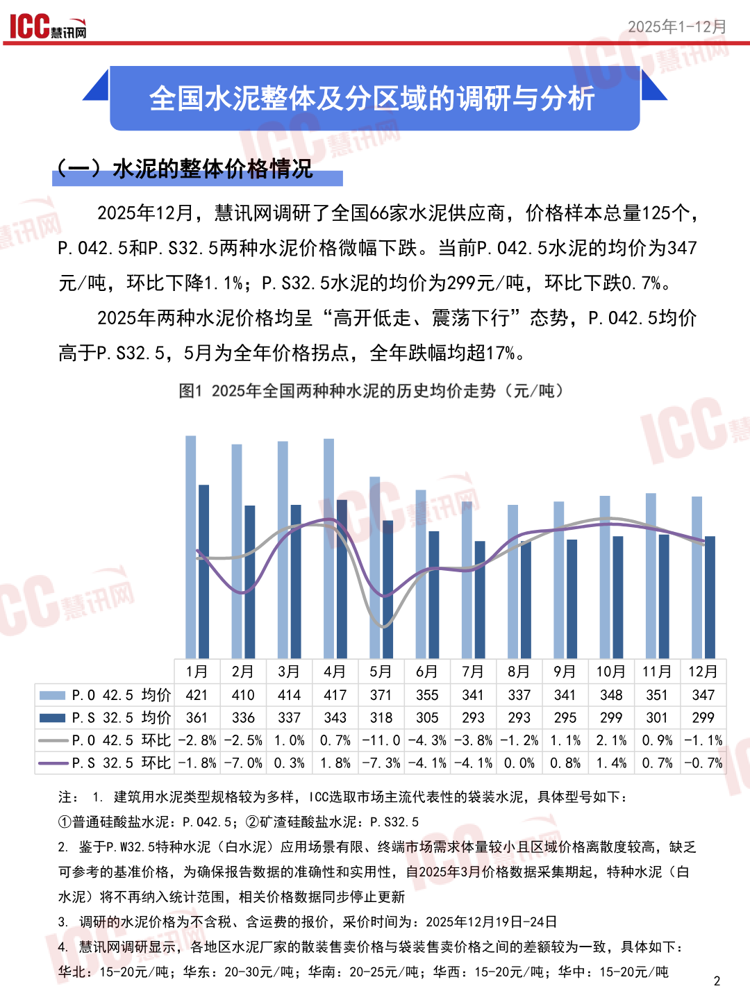
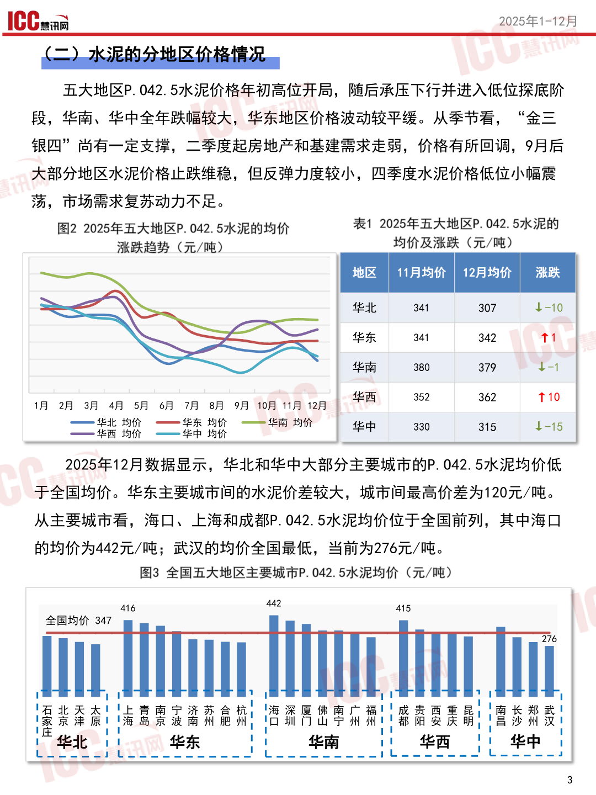
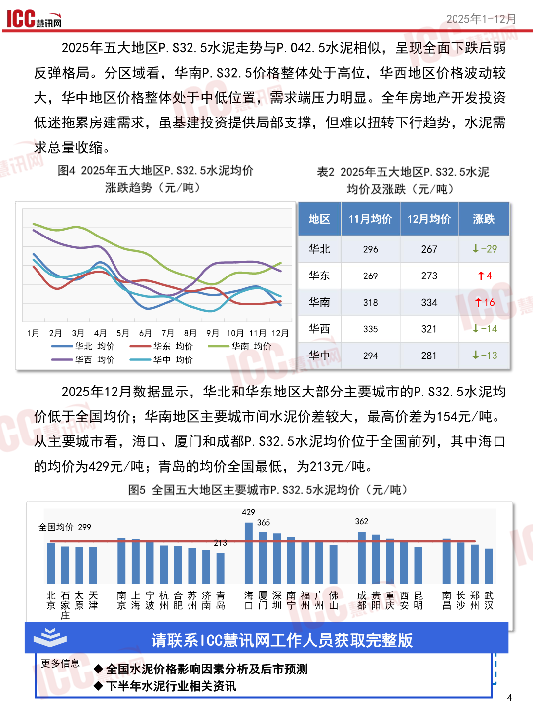

泥价格走势分析年度报告
全国水泥价格走寿报告
2025年1-12月
目“全全国水泥整休及分区域价格的调研与分析
录人全国水泥价格影响因素分析及后市预测
人下半年水泥行业相关资讯
人12月10C慧讯网调研全国28个城市水泥厂商66家，价格样本总量125个 人调研区域分布如下: 江 新林 4河津 、\、华北地区9家青夏西山 说海东
华东地区“18家四下所相
明华南地区16家藏西直本
华西地区”13家前隐北庆
华中地区”10家贵湖江本
州西鱼一史7
区域调研城市二过二凡区攻
注:1.各地区分别调研部分代表性较强的省〈市)，调研的厂家位于各省省会及核心城市，不含港澳台
2.本报告参考数据来源于国家统计局、海关总署等官方机构，由于官方数据统计有一定滞后性，报告通过
环比与同比的趋势对市场情况做出预判，上月部分数据延后至本期报告予以更新，望读者周知
3.表内均价经过四舍五入处理，环比基于调研数据客观结果计算1
查看原版第1页

IGCC二2025年1-12月
本全国水泥整体及分区域的调研与分析大
TEST 2025年12?月，慧讯网调研了全国66家水泥供应商，价格样本总量125个， P.042.5和P.S32.5两种水泥价格微幅下跌。当前P.042.5水泥的均价为347 元/吨，环比下降1.1%;P.S32.5水泥的均价为299元/吨，环比下跌0.7%。 2025年两种水泥价格均呈“高开低走、震荡下行”态势，P.042.5均价 高于P.S32.5，5月为全年价格拐点，全年跌幅均超17%。
图12025年全国两种种水泥的历史均价走势〈元/吨)
[本十 一】
| 月 | 和 角 明 | 角 上 | 月 明 人 衣 | 明 9? 明 | 1 月 1 | 月 12 月 | |
|---|---|---|---|---|---|---|---|
| EGG P.0 42.5 | 均 价 421 | 410 4I4 | 47 371 | 355 341 | 337 341 | 348 351 | 347 |
| PS 32.5 | 均 价 361 | 336 337 | 343 318 | 305 293 | 293 295 | 299 301 | 299 |
一一P.042.5环比-2.8%-2.5%1.0%0.7%-11.0-4.3%-3.8%-1.2%1.1%2.1%0.9%一1.1% 一一P.S32.5环比-1.8%-7.0%0.3%1.8%-7.3%-4.1%-4.1%0.0%0.8%1.4%0.7%-0.7%
注:1，建筑用水泥类型规格较为多样，10C选取市场主流代表性的袋装水泥，具体型号如下:
外普通硅酸盐水泥:P.042.5，@@矿渣硅酸盐水泥:P.S32.5 2，鉴于P.W32.5特种水泥〈自水泥)应用场景有限、终端市场需求体量较小且区域价格离散度较高，缺乏 可参考的基准价格，为确保报告数据的准确性和实用性，自2025年3月价格数据采集期起，特种水泥〈白 水泥)将不再纳入统计范围，相关价格数据同步停止更新 3，调研的水泥价格为不含税、含运费的报价，采价时间为:2025年12月19日-24日 4，慧讯网调研显示，各地区水泥厂家的散装售卖价格与袋装售卖价格之间的差额较为一致，具体如下: 华北:15-20元/吨;华东:20-30元/吨;华南:20-25元/吨;华西:15-20元/吨;华中:15-20元/吨2
查看原版第2页

1CC。2025年1-12月 五大地区P.042.5水泥价格年初高位开局，随后承压下行并进入低位探底阶 段，华南、华中全年跌幅较大，华东地区价格波动较平缓。从季节看，“人金三 银四”尚有一定支撑，二季度起房地产和基建需求走弱，价格有所回调，9月后 大部分地区水泥价格止跌维稳，但反弹力度较小，四季度水泥价格低位小幅震 荡，市场需求复苏动力不足。
| 图 2 2025 | 年 五 大 地 区 P. 042. | 5 水 泥 的 均 | 价 | 表 1 2025 | 年 五 大 地 | 区 P. 042. | 5 水 泥 的 |
|---|---|---|---|---|---|---|---|
| 一 | 一 | 华北 | 341 | 307 | 4-10 | ||
| ss | 华东 | 341 | 342 | T1 | |||
| 汪 一 | 一 | 华南 | 380 | 379 | T-1 | ||
| 人 角 和 角 9 明 | 4 角 5 月 明 7 | 月 明 9% 月 1o 月 | 1 月 12 月 | 华西 | 352 | 362 | T10 |
二条只一基因一提交|各本
2025年12月数据显示，华北和华中大部分主要城市的P.042.5水泥均价低 于全国均价。华东主要城市间的水泥价差较大，城市间最高价差为120元/吨。 从主要城市看，海口、上海和成都P.042.5水泥均价位于全国前列，其中海口 的均价为442元/吨;武汉的均价全国最低，当前为276元/吨。
图3全国五大地区主要城市P.042.5水泥均价〈元/吨)
416442415
全国均价347
276 !互北秋太!!上青南宁济苏含杭|!海深厦佛南广福1!戌贵西重晶|!窗长郑武， !案喜淖良!海岛京波南州尼州|I口名门山宁州请!1都羡安庆阴||昌涉儿汉| L华北1华东1华南1华西1!华中， 本用--生硬下看VIA一一---------L----一一-1L-一一一一一-上L----一一
查看原版第3页

1CC。2025年1-12月 2025年五大地区P.S32.5水泥走势与P.042.5水泥相似，呈现全面下跌后弱 反弹格局。分区域看，华南P.S32.5价格整体处于高位，华西地区价格波动较 大，华中地区价格整体处于中低位置，需求端压力明显。全年房地产开发投资 低迷拖累房建需求，虽基建投资提供局部支撑，但难以扭转下行趋势，水泥需 求总量收缩。
图42025年五大地区P.S32.5水泥均价表22025年五大地区P.32.5水泥
涨跌趋势〈元/吨)均价及涨跌《〈元/吨)
| 华北 | 296 | 267 | 业 -29 | |||
|---|---|---|---|---|---|---|
| SS EN | 一 一 | 华东 | 269 | 273 | T4 | |
| SS | 华南 | 318 | 334 | T16 | ||
| 衣 角 角 角 | 肯 明 O | 明 9 明 10 月 1 月 | 12 月 | 华西 | 335 | 321 | 14 |
一一华北均价”一一华东均价”一一华南均价
一华西均价”一一华中均价问2281二
2025年12月数据显示，华北和华东地区大部分主要城市的P.S32.5水泥均 价低于全国均价;华南地区主要城市间水泥价差较大，最高价关为154元/吨。 从主要城市看，海口、厦门和成都P.S32.5水泥均价位于全国前列，其中海口 的均价为429元/吨;青岛的均价全国最低，为213元/吨。
图5全国五大地区主要城市P.S32.5水泥均价《元/吨)
429 全国均价299|3652 北石太天南上宁杭合苏济青海厦深南福广佛成贵重西昆雷长郑起 未家储沼永海波州乳州南昌口门扣宁州州山都亲庆安关昌沙州汉 心2o请联系100臣讯网工作人员获取完整版 更多信息。儿全国水泥价格影响因素分析及后市预测| 儿下半年水泥行业相关资讯，
查看原版第4页

AN本 专注让我们更专业!
看讯网在瑞达恒各分公司的联系方式
Www.rccgroup.cn”www.iccchina.com
查看原版第5页

瑞达恒 5EEESULA一DERTc
ZEsSSSS1人研立院
EN板块上线了
2SN二央线
PASSSSSNNNA专注让我们更专业
ETASSSNS和.AE人0区 SSSSN
@聚焦于工程领域的行业研究报告
@@对行业实时趋势和国家产业政策的研究与解读
@@为工程行业客户提供专业的第三方视角和精准的市场分析 专注让我们更雪上，
5全研究取信于工程多9行业基究报告行业区时姑的和Ch1人
全于[AAS|量久册
和为工理行业客户提供专业第三方视角和六1隐
四行业报告。团委研究
2国
查看原版第6页